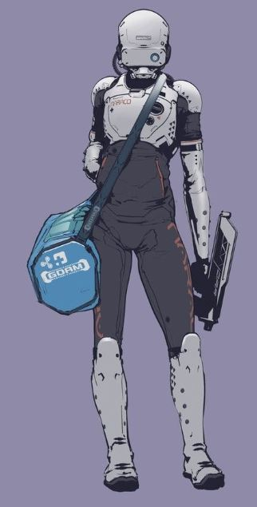
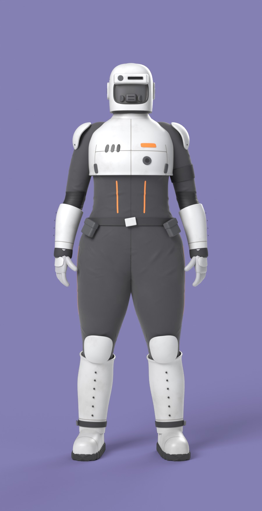
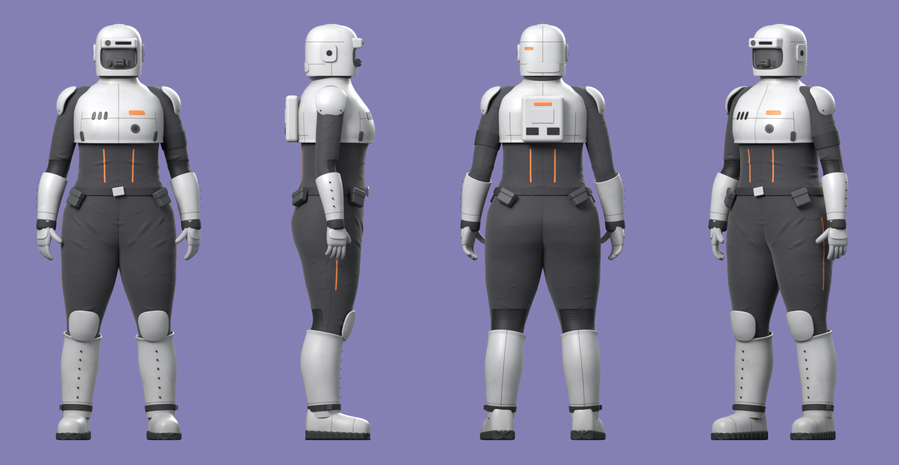
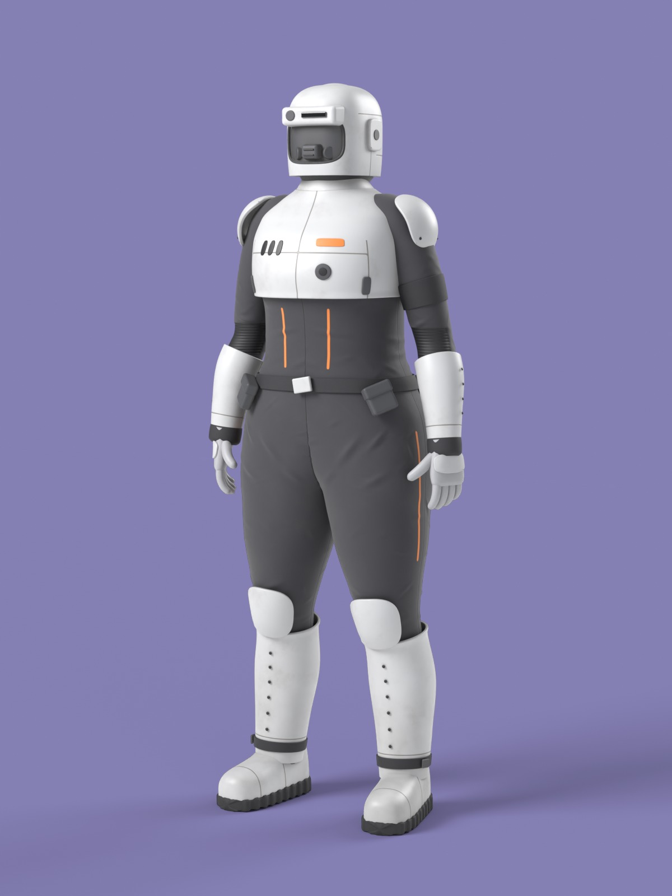
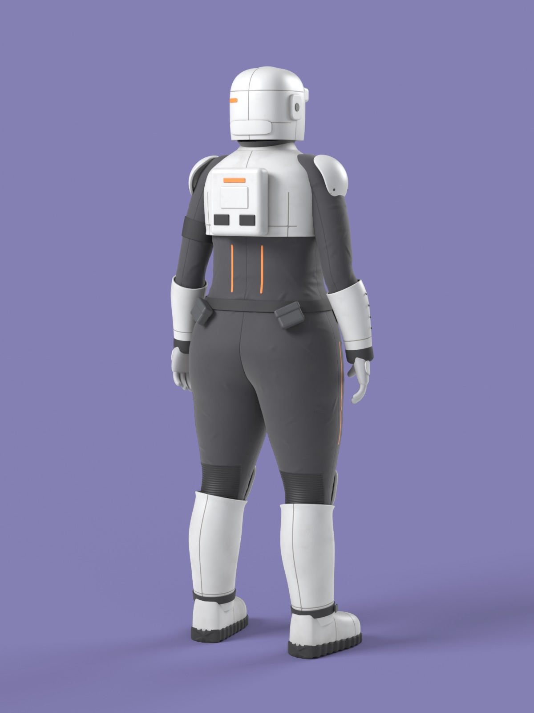
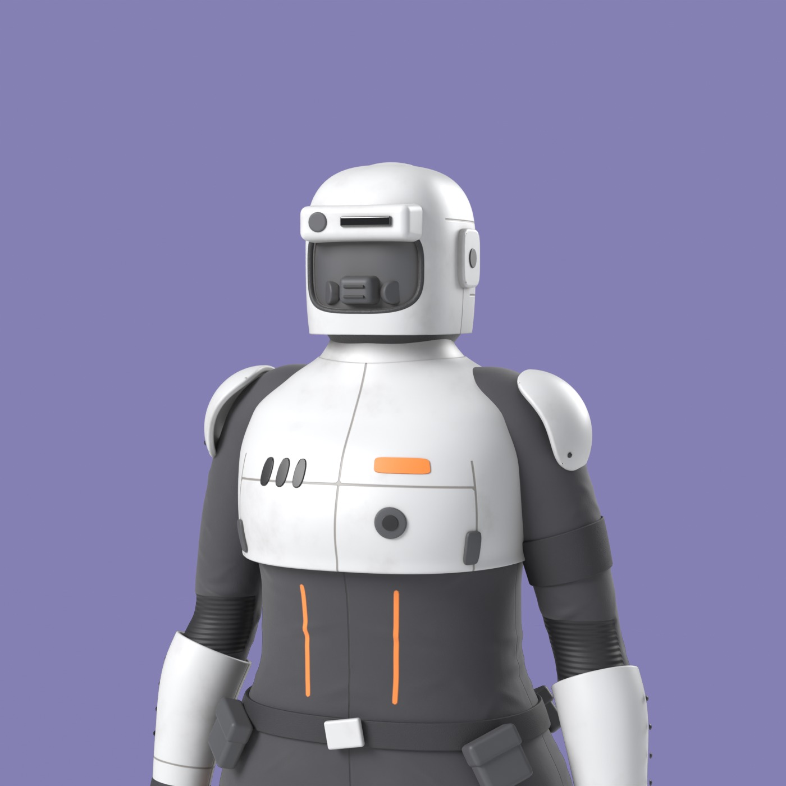
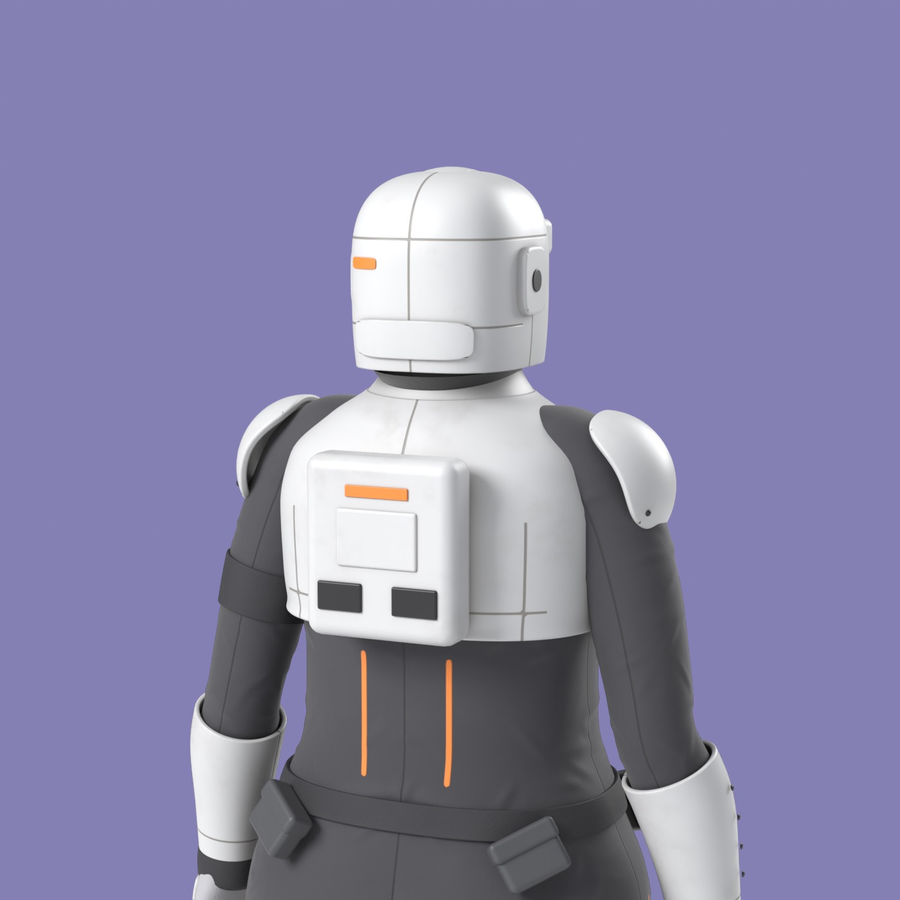
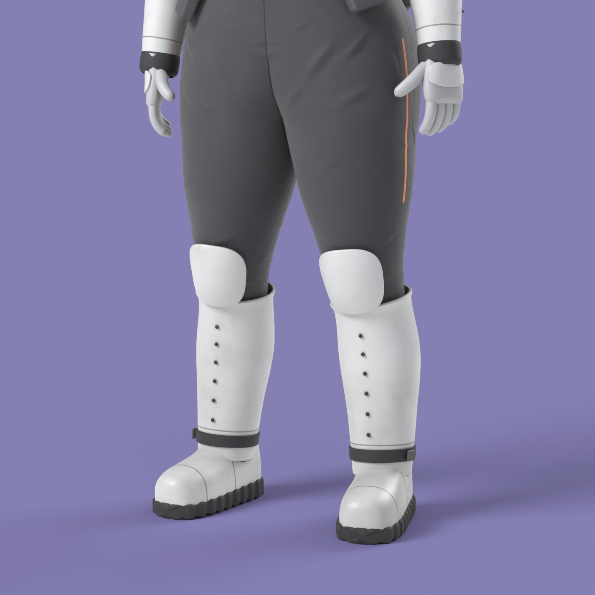
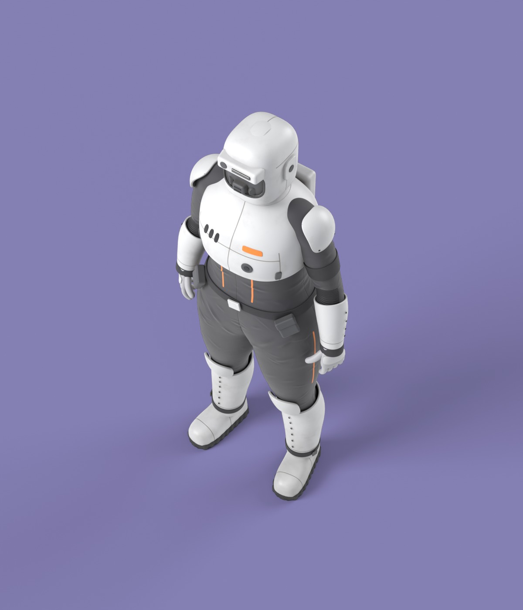
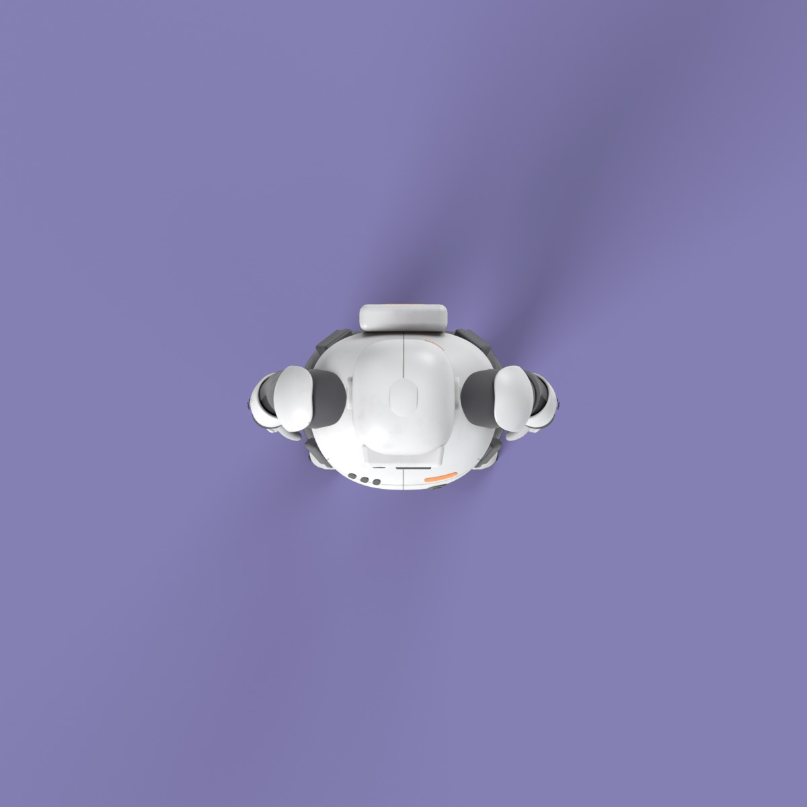

Stocky agent — scripted Blender model
Character only: the artwork's bag and weapon are props and are left out. Built from Python alone
(scripts/build.py, Blender 4.5.10 LTS, Cycles). Every render is of the saved source/stocky_agent.blend.
Artwork vs model, straight-on
The artwork is one small front view of a posed figure carrying a bag and a weapon. The model stands in a neutral A-pose with empty hands, so pose and hands differ on purpose; armour layout, colours and build are what to compare.


Turnaround

Studio views







What this is not yet
A high-resolution source model: 60 separate parts, about 0.49 M source / 1.15 M evaluated triangles. No UVs, no rig,
no skin weights, no export. See ../PROVENANCE.md.